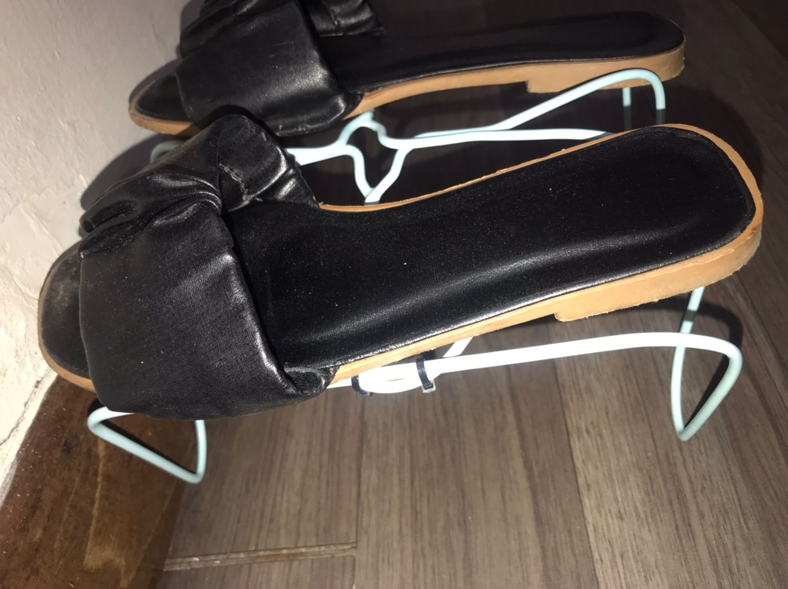
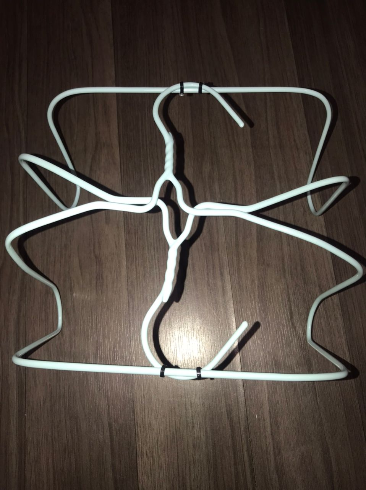
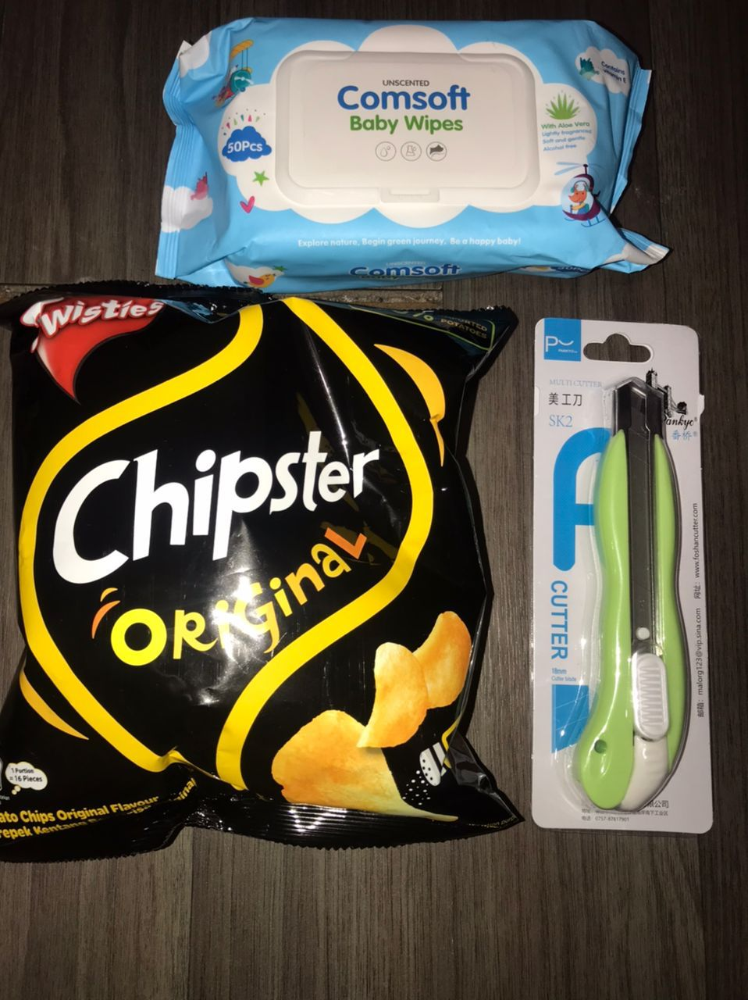

This part contains LifeHacks for HouseHold. I've already attempted to make a shoe rack that is so simple and compact that it can be made by parents, children, or students because the materials are inexpensive and it takes less than 10 minutes to make. Plus, I also found an easy way to avoid noise from opening the keropok by adding a cover of wet tissue... and it works well!
Shoes Rack


After preparing all equipment such as hangers, cable tight, scissors and knives. First, take two hangers first. Both, need to be flapped on the left and right sides in a straight line. Then, at the head of the hanger it is found together with each end of the hanger. And unite by using a tight cable in the center hanger and also the end of the hanger to strengthen the structure of the hanger as well as the balance point of both hangers. Our shoe rack is ready!
Keropok Steps

Start gathering supplies like your preferred crackers, a knife, and damp tissues. Start by removing the tissue's hard container. After that, cut the tissue into a container form with a knife. Stick it, too. Eating crackers has never been so simple, orderly, or comfortable!